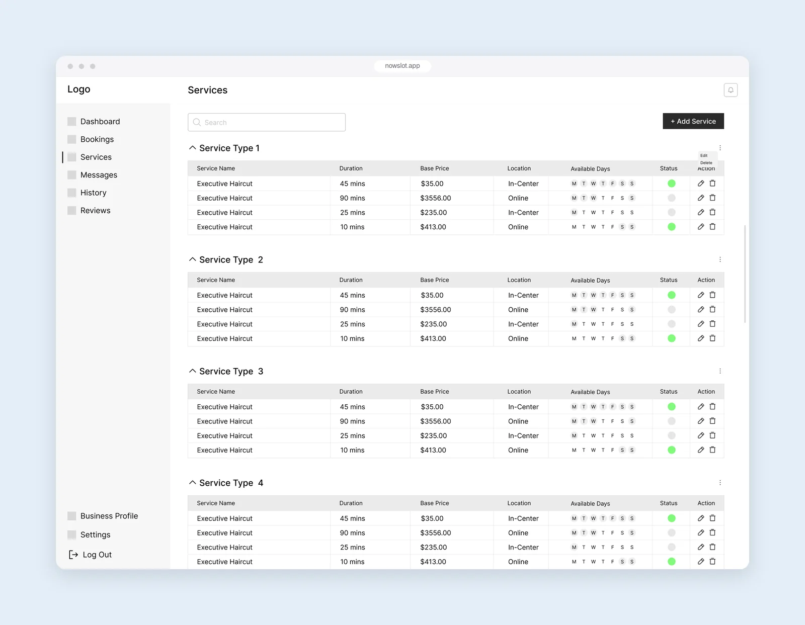
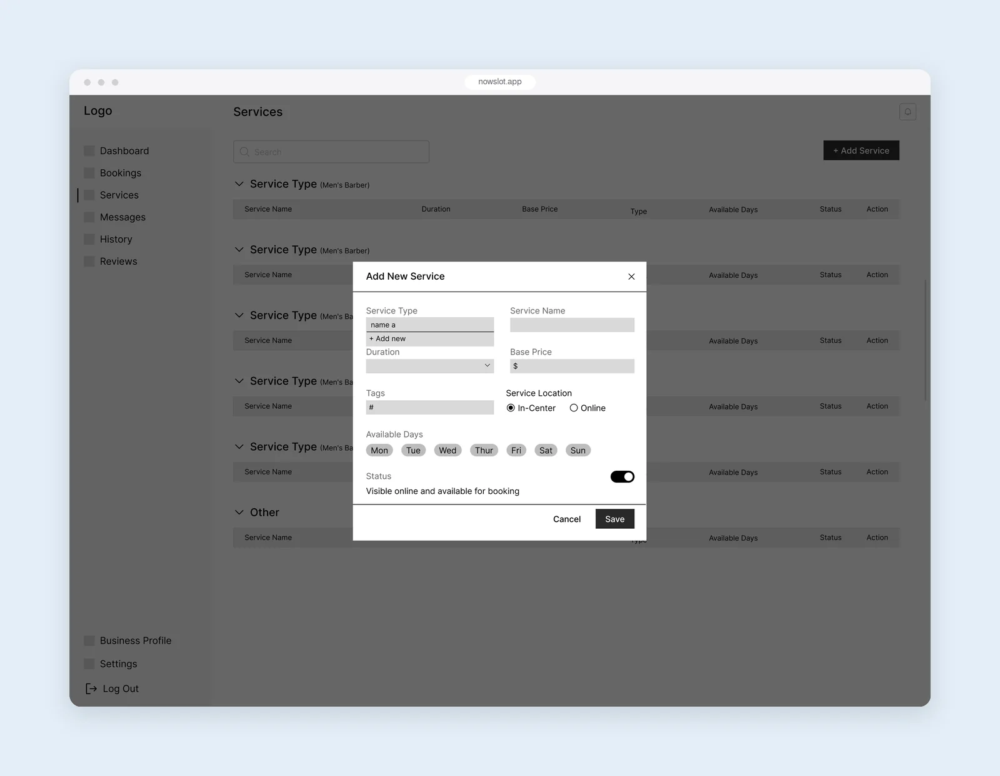
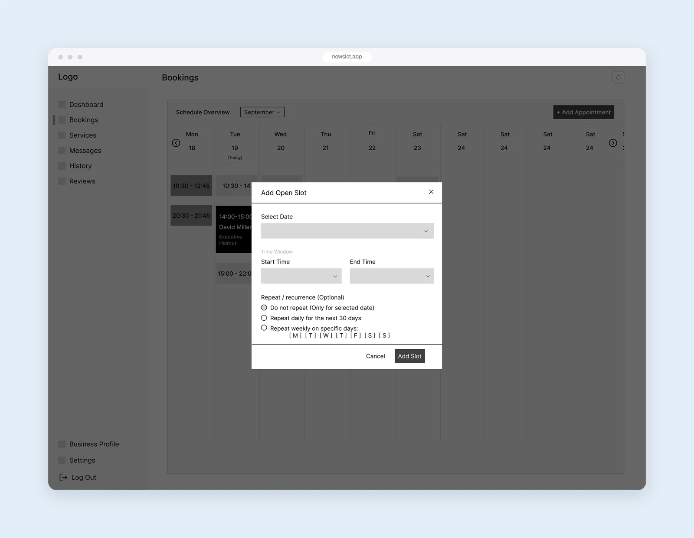
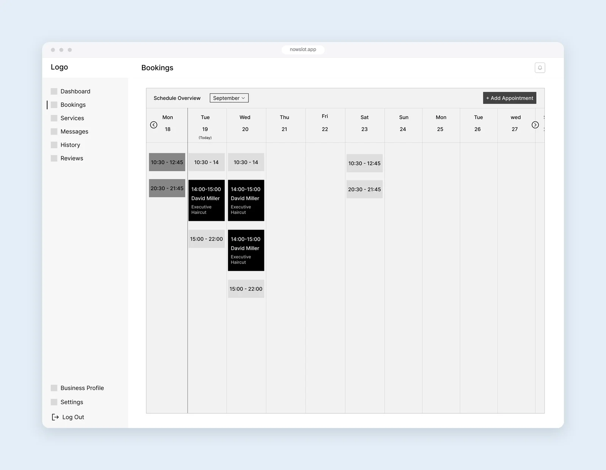
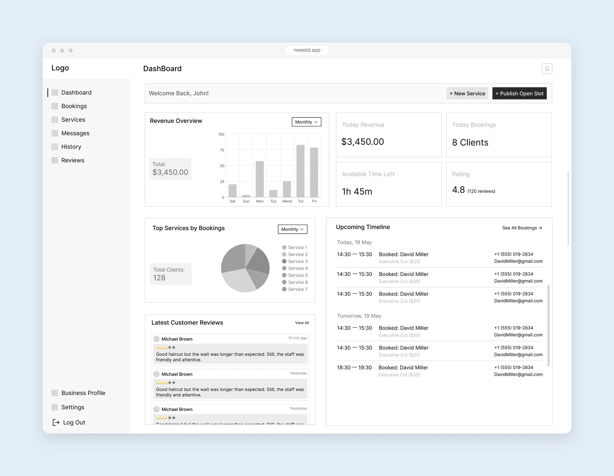

کیساستادی
فروش زمان خالی
طراحی اینکه کسبوکارهای محلی چطور زمان خالی ۴۸ ساعت آیندهشان را در یک مارکتپلیس منتشر کنند و رزروها را مدیریت کنند؛ با شروع از این سؤال که این مدل اصلاً برای کدام کسبوکارها جواب میدهد.

نام و جزئیات پروژه به دلیل قرارداد عدم افشا تغییر کرده است.
زمینه
Nowslot زمان خالی کسبوکارهای محلی را برای ۴۸ ساعت آینده نشان میدهد. مشتریها میتوانند در فرصت کوتاه خدمتی را رزرو کنند و کسبوکارها زمانی را پر میکنند که وگرنه از دست میرفت: صندلی خالی آرایشگاه یا زمین رزرونشده، وقتی ساعتش گذشت دیگر درآمدی ندارد.
این کیساستادی روی سمت کسبوکار تمرکز دارد: اینکه کسبوکار چطور خدماتش را تعریف میکند، زمان خالیاش را منتشر میکند و رزروها را دنبال میکند.
سؤال اول: این مدل برای کدام کسبوکارها جواب میدهد؟
کارفرما میخواست همهٔ کسبوکارها روی پلتفرم باشند. انواع مختلف خدمات را بررسی کردیم و دیدیم این مدل برای همه جواب نمیدهد. فروش زمان خالی فقط وقتی معنا دارد که خدمت مدت ثابت و قیمت قابل پیشبینی داشته باشد و ظرفیت کسبوکار با زمان یا تعداد جا سنجیده شود.
نقشهٔ محصول
کسبوکار و مشتری هدفهای متفاوتی دارند، پس آنها را به شکل دو پنل مرتبط به هم طراحی کردم. پنل کسبوکار حول چهار کار ساخته شده: دیدن وضعیت روز، انتشار زمان خالی، مدیریت خدمات و رسیدگی به رزروها.
یک بار برای همیشه تعریف کردن خدمات
کسبوکار خدماتش را یک بار تعریف میکند: نوع خدمت، نام، مدت، قیمت پایه، برچسبها، محل ارائه (حضوری یا آنلاین) و روزهایی که در دسترس است. خدمات بر اساس نوع گروهبندی میشوند و یک دکمهٔ وضعیت تعیین میکند هر خدمت برای رزرو نمایش داده شود یا نه، تا کسبوکار بتواند خدمتی را بدون حذف کردن موقتاً متوقف کند.


انتشار زمان خالی
منطق مدیریت زمان خالی و رزروها را توسعهدهندهها تعریف کردند و من صفحهها را روی آن طراحی کردم.
برای انتشار زمان خالی، کسبوکار یک تاریخ و یک بازهٔ زمانی انتخاب میکند. چون خیلی از کسبوکارها هر هفته همان زمانهای خالی را دارند، همین فرم میتواند بازه را روزانه تا ۳۰ روز آینده یا هفتگی در روزهای انتخابی تکرار کند تا مجبور نباشند هر بار دوباره واردش کنند.

در تقویم رزروها، بازههای خالی و رزروهای قطعی کنار هم قرار دارند و هر رزرو نام مشتری و خدمت را نشان میدهد، تا کسبوکار با یک نگاه ببیند کدام زمان هنوز خالی است.

وضعیت روز با یک نگاه
داشبورد چیزهایی را کنار هم میآورد که صاحب کسبوکار اول سراغشان میرود: درآمد و رزروهای امروز، مقدار زمان خالی باقیمانده، امتیازش، رزروهای پیش رو برای امروز و فردا و نظرهای اخیر. انتشار زمان خالی تازه هم از همینجا با یک کلیک انجام میشود.

نتیجه
در دو هفته سایتمپ، یوزر فلو و وایرفریم پنلهای کسبوکار و مشتری را تحویل دادم. پرسوناهایی که بر اساسشان طراحی کردیم بر پایهٔ فرض بودند، نه تحقیق. محصول در حال توسعه است، پس هنوز دادهٔ کاربر واقعی در دست نیست.
چیزهایی که یاد گرفتم
- قبل از طراحی، محدوده را مشخص کن. کارفرما همهٔ کسبوکارها را میخواست، اما پرسیدن اینکه «این مدل واقعاً برای چه کسی جواب میدهد؟» قبل از کشیدن اولین صفحه، جلوی کلی طراحی بیاستفاده را گرفت.
- نه گفتن، همراه با دلیل، بخشی از کار است. چون دلیلهایم را واضح توضیح دادم، تیم توانست آنها را بررسی کند و به جای سلیقه، با هم تصمیم بگیرد.
- طراحی روی منطقی که توسعهدهندهها تعریف کردهاند سریعتر است. وقتی توسعهدهندهها مشخص کردند زمان خالی چطور مدیریت میشود، توانستم به جای حدس زدن دربارهٔ کار سیستم، روی تجربهٔ کاربر تمرکز کنم.
- جزئیات کوچک بیشترین زمان را صرفهجویی میکنند. تکرار بازهٔ زمانی گزینهٔ کوچکی به نظر میرسد، اما برای صاحب کسبوکاری که ساعتهای خالیاش هر هفته یکی است، یعنی دیگر لازم نیست هر بار دوباره واردشان کند.
کیساستادی بعدی
یک تایملاین، سه نقش
خواندن کیساستادی ←